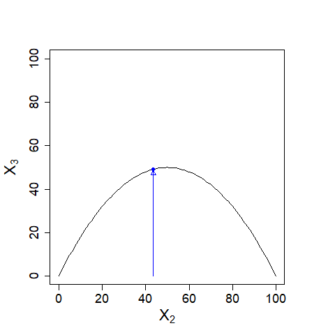
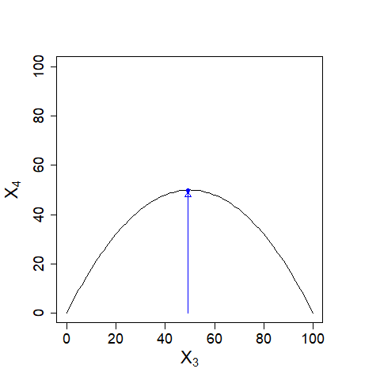

| 横軸に\(X_{0}\)、縦軸に\(X_{1}\)を置き、曲線\(X_{1}=0.02(100-X_{0})X_{0}\)を描きます。\(X_{0}=80\)とすると、\(X_{1}=32\)です。 |
| 次に横軸に\(X_{1}\)、縦軸に\(X_{2}\)を置き、曲線\(X_{2}=0.02(100-X_{1})X_{1}\)を描きます。\(X_{1}=32\)とすると、\(X_{1}=43.52\)です。 |
| 同じように\(X_{3}\)、\(X_{4}\)を求めて描いてゆくと\((X_{n}, X_{n+1})=(50,50)\)に近づいていきます。 |
|  |  |
| これらを一つの図にまとめられないでしょうか。 縦軸に\(X_{n+1}\)、横軸に\(X_{n}\)を取り、曲線\(X_{n+1}=0.02(100-X_{n})X_{n}\)と\(X_{n+1}=X_{n}\)を描きます（下図）。 |
| \((X_{0},X_{0})(=(80,80))\)から\((X_{0},X_{1})\)へ線（青線）を引きます。 さらに \((X_{0},X_{1})\)から\((X_{1},X_{1})\)へ線（赤線）を引きます（下図）。 |
| 次に\((X_{1},X_{1})\)から\((X_{1},X_{2})\)へ線（青線）を引き、 さらに \((X_{1},X_{2})\)から\((X_{2},X_{2})\)へ線（赤線）を引く、．．．ということを反復的に繰り返すことで\((X_{n},X_{n+1})\)が\((50,50)\)に近づくことがわかります（下図）。 |
|
まとめると、縦軸に\(X_{n+1}\)、横軸に\(X_{n}\)を取り、適当な\(X_{0}\)を決めて（\(k=0\)として） (1) \((X_{k},X_{k})\)から\((X_{k},X_{k+1})\)へ線を引く (2)\((X_{k},X_{k+1})\)から\((X_{k+1},X_{k+1})\)へ線を引く (3)\(k\)を\(1\)大きくして(1)に戻る ということを反復的に繰り返すことで、\(X_{n}\)がどこへ向かうかが視覚的にわかります。 以下のような図を『蜘蛛の巣図（web diagram）』といいます。 矢印は向きがわかるように付ければ充分です。 |
| 前のページへ戻る | 次のページへ進む |